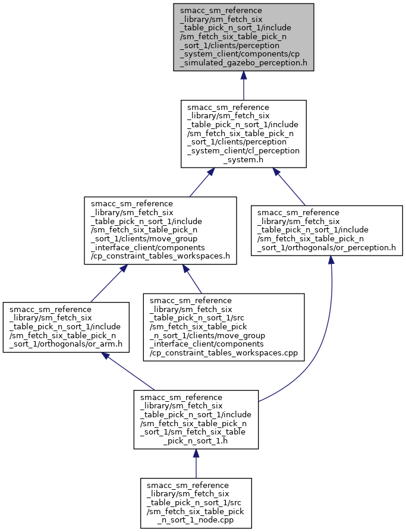

#include <smacc/component.h>#include <tf/transform_broadcaster.h>#include <tf/transform_datatypes.h>#include <tf/transform_listener.h>#include <gazebo_msgs/LinkStates.h>#include <moveit_msgs/CollisionObject.h>#include <move_group_interface_client/cl_movegroup.h>#include "cp_scene_state.h"
Include dependency graph for cp_simulated_gazebo_perception.h:

This graph shows which files directly or indirectly include this file:

Go to the source code of this file.
Classes | |
| class | sm_fetch_six_table_pick_n_sort_1::cl_perception_system::CpSimulatedGazeboPerception |
Namespaces | |
| sm_fetch_six_table_pick_n_sort_1 | |
| sm_fetch_six_table_pick_n_sort_1::cl_perception_system | |